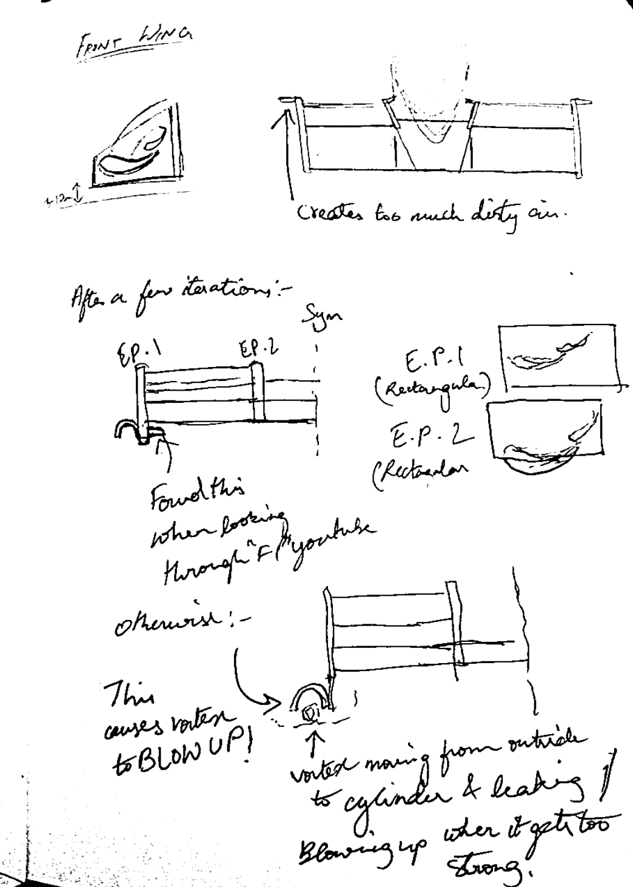
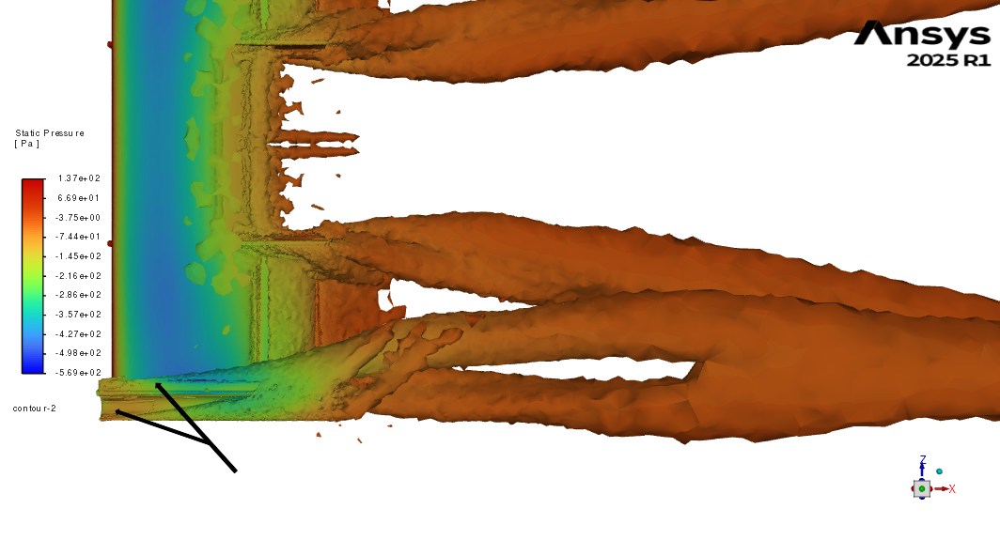
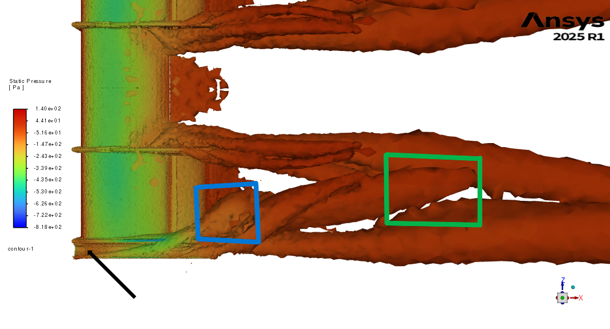

Front-wing
{Vortex-sealed Under-Wing Concept}
The front wing was designed as a vortex-controlled suction system, where a stable endplate-generated vortex seals the low-pressure region against the surroundings.
Early concepts showed that strong outboard loading and aggressive endplate curvature produced a powerful vortex, but also injected large amounts of dirty-air. This contaminated the flow field downstream and destabilized the sealing mechanism.

To understand this further, the wing was decomposed into its vortex-producing elements:
The outer endplate, the lower edge near the ground, and the interaction between the two.
CFD & Sketch-based reasoning showed that uncontrolled strengthening of this vortex leads to vortex breakdown → the sudden expansion and loss of coherence that causes the seal to collapse.
The sketches capture two critical observations:
This is why a simple Gurney-based or flap-based approach was rejected for the front wing.
A Gurney would have increased circulation, but without vortex containment, it would have driven the sealing vortex into an unstable regime.
The outer endplate, the lower edge near the ground, and the interaction between the two.
CFD & Sketch-based reasoning showed that uncontrolled strengthening of this vortex leads to vortex breakdown → the sudden expansion and loss of coherence that causes the seal to collapse.
The sketches capture two critical observations:
- When the vortex grows too strong, it "blows up" - it expands, detaches from the ground and loses its ability to seal the low pressure under the wing.
- If external flow is allowed to leak into the vortex core, it accelerates the breakdown.
This is why a simple Gurney-based or flap-based approach was rejected for the front wing.
A Gurney would have increased circulation, but without vortex containment, it would have driven the sealing vortex into an unstable regime.
After several iterations, the solution emerged: a two-step endplate system.


- Tubular cross-section that generated the strong, initial sealing vortex.
- Flat-plate that allowed this vortex to leak underneath controllably, keeping the vortex contained while still maintaining the seal.
Final front-wing(tube+flat-plate):
Older front-wing(tube only):
Final front-wing(tube+flat-plate):
Older front-wing(tube only):
Check-out Rear-wing ⇒
F
R
O
N
T
W
I
N
G